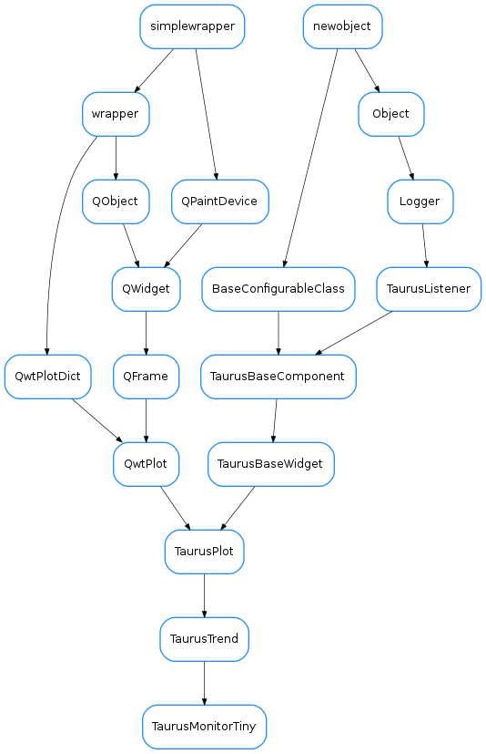

TaurusMonitorTiny¶

-
class
TaurusMonitorTiny(parent=None, designMode=False)[source]¶ Bases:
taurus.qt.qtgui.qwt5.taurustrend.TaurusTrendA specialised
TaurusTrendwidget for monitoring scalar values and show their evolution over time. It is designed to be small (e.g. to fit in a toolbar). It is inspired by the SysMon applet in old KDE3.-
DEFAULT_MAX_BUFFER_SIZE= 8192¶
-